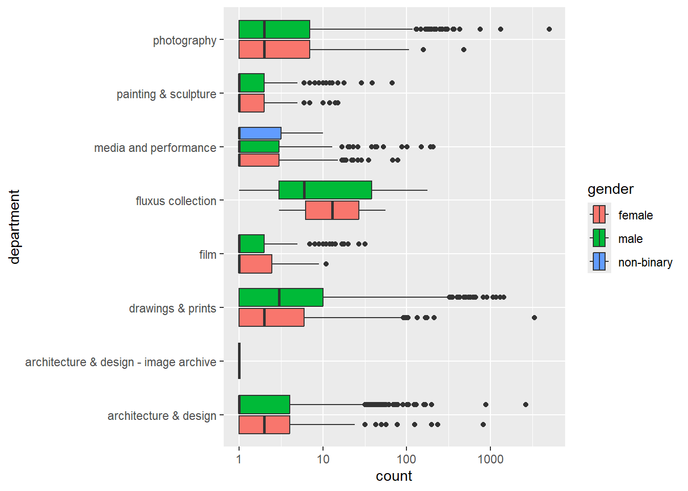
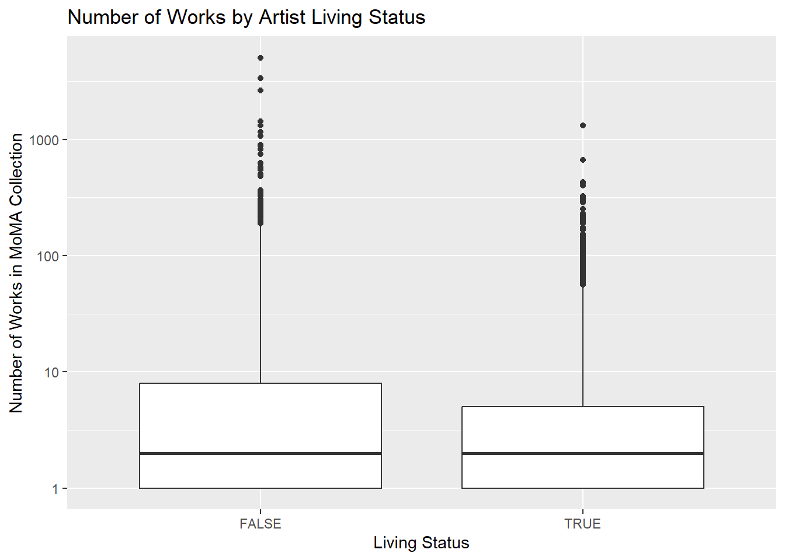
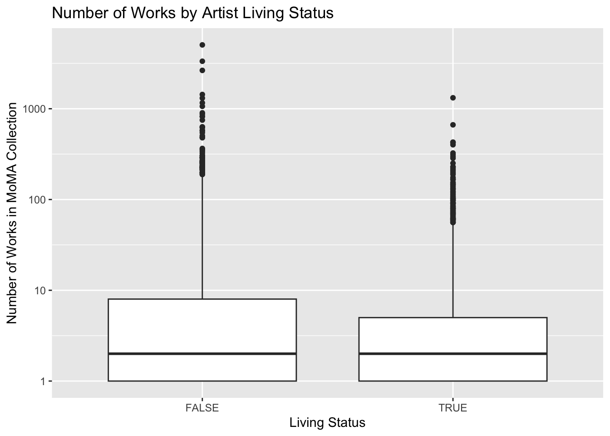
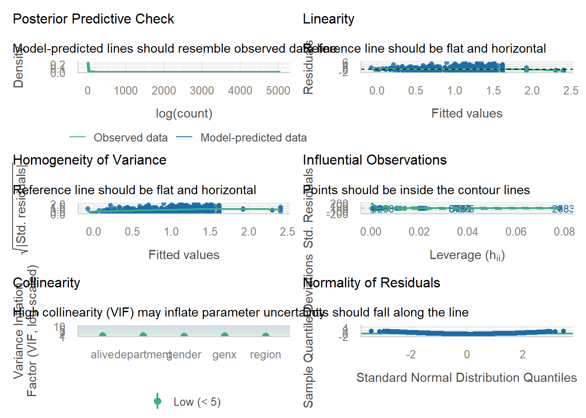
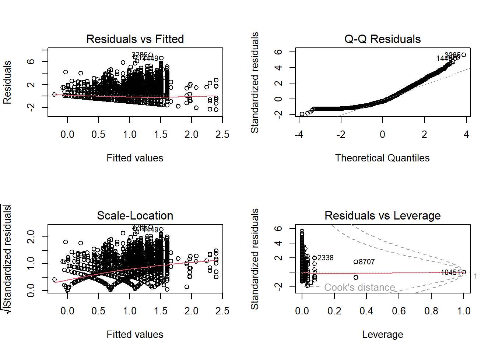

Analysis of Works of Art in the Museum of Modern Art as Factors of Gender, Living Status, Region, Generation and Department
Exploratory plots
Figure 1: Distribution of log-transformed number of works by artistic department and gender. Noticeable variation exists across departments, with Drawings & Prints and Photography showing higher dispersion. Within several departments, male artists tend to have slightly higher median counts than female artists, motivating interaction modeling.
Figure 2:
Distribution of log-transformed number of works in the MoMA collection by artist living status. Deceased artists exhibit slightly higher medians and greater variability compared to living artists, suggesting differences in long-term accumulation of works.

Figure 3: Distribution of log-transformed number of works by geographic region. While Europe and North America show slightly higher medians and more extreme values, there is substantial overlap across regions, indicating limited regional separation after accounting for other factors.

Model 1
Call:
lm(formula = log(count) ~ alive, data = moma)
Residuals:
Min 1Q Median 3Q Max
-1.3007 -0.9590 -0.2658 0.6504 7.2264
Coefficients:
Estimate Std. Error t value Pr(>|t|)
(Intercept) 1.30074 0.01980 65.69 <2e-16 ***
aliveTRUE -0.34175 0.02771 -12.34 <2e-16 ***
---
Signif. codes: 0 '***' 0.001 '**' 0.01 '*' 0.05 '.' 0.1 ' ' 1
Residual standard error: 1.319 on 9069 degrees of freedom
(1893 observations deleted due to missingness)
Multiple R-squared: 0.0165, Adjusted R-squared: 0.01639
F-statistic: 152.2 on 1 and 9069 DF, p-value: < 2.2e-16aliveTRUE
28.94765 Model 2
Call:
lm(formula = log(count) ~ alive + gender + region + department,
data = moma)
Residuals:
Min 1Q Median 3Q Max
-2.4072 -0.9920 -0.4036 0.6900 7.1834
Coefficients:
Estimate Std. Error t value
(Intercept) 0.90869 0.13824 6.573
aliveTRUE -0.33443 0.02794 -11.968
gendermale 0.09938 0.03510 2.831
gendernon-binary 0.11729 0.74203 0.158
regionAsia -0.07092 0.13940 -0.509
regionAustralia/Oceania -0.20281 0.22530 -0.900
regionCentral America 0.14161 0.37794 0.375
regionEurope -0.01608 0.13095 -0.123
regionNorth America 0.08864 0.13031 0.680
regionOther/Unknown -0.71581 0.22074 -3.243
regionSouth America -0.06131 0.14211 -0.431
departmentarchitecture & design - image archive -1.09670 1.28038 -0.857
departmentdrawings & prints 0.51525 0.03730 13.815
departmentfilm -0.34874 0.08470 -4.117
departmentfluxus collection 1.31052 0.23989 5.463
departmentmedia and performance 0.02225 0.07299 0.305
departmentpainting & sculpture -0.50627 0.06491 -7.799
departmentphotography 0.35180 0.04530 7.766
Pr(>|t|)
(Intercept) 5.19e-11 ***
aliveTRUE < 2e-16 ***
gendermale 0.00465 **
gendernon-binary 0.87441
regionAsia 0.61093
regionAustralia/Oceania 0.36804
regionCentral America 0.70789
regionEurope 0.90229
regionNorth America 0.49641
regionOther/Unknown 0.00119 **
regionSouth America 0.66615
departmentarchitecture & design - image archive 0.39172
departmentdrawings & prints < 2e-16 ***
departmentfilm 3.87e-05 ***
departmentfluxus collection 4.81e-08 ***
departmentmedia and performance 0.76052
departmentpainting & sculpture 6.92e-15 ***
departmentphotography 9.01e-15 ***
---
Signif. codes: 0 '***' 0.001 '**' 0.01 '*' 0.05 '.' 0.1 ' ' 1
Residual standard error: 1.28 on 9053 degrees of freedom
(1893 observations deleted due to missingness)
Multiple R-squared: 0.0759, Adjusted R-squared: 0.07416
F-statistic: 43.74 on 17 and 9053 DF, p-value: < 2.2e-16Model 3
Call:
lm(formula = log(count) ~ alive + gender + region + department +
genx, data = moma)
Residuals:
Min 1Q Median 3Q Max
-2.4007 -0.9909 -0.3973 0.6910 7.1847
Coefficients:
Estimate Std. Error t value
(Intercept) 0.92286 0.13873 6.652
aliveTRUE -0.32339 0.02939 -11.004
gendermale 0.09501 0.03528 2.693
gendernon-binary 0.15056 0.74252 0.203
regionAsia -0.07968 0.13958 -0.571
regionAustralia/Oceania -0.21449 0.22550 -0.951
regionCentral America 0.13613 0.37795 0.360
regionEurope -0.02696 0.13125 -0.205
regionNorth America 0.07575 0.13074 0.579
regionOther/Unknown -0.72423 0.22084 -3.279
regionSouth America -0.07365 0.14247 -0.517
departmentarchitecture & design - image archive -1.09362 1.28035 -0.854
departmentdrawings & prints 0.51794 0.03736 13.863
departmentfilm -0.34633 0.08472 -4.088
departmentfluxus collection 1.30705 0.23990 5.448
departmentmedia and performance 0.03114 0.07336 0.424
departmentpainting & sculpture -0.50576 0.06491 -7.791
departmentphotography 0.35158 0.04530 7.761
genxTRUE -0.05514 0.04546 -1.213
Pr(>|t|)
(Intercept) 3.05e-11 ***
aliveTRUE < 2e-16 ***
gendermale 0.00710 **
gendernon-binary 0.83932
regionAsia 0.56813
regionAustralia/Oceania 0.34154
regionCentral America 0.71873
regionEurope 0.83726
regionNorth America 0.56235
regionOther/Unknown 0.00104 **
regionSouth America 0.60518
departmentarchitecture & design - image archive 0.39304
departmentdrawings & prints < 2e-16 ***
departmentfilm 4.39e-05 ***
departmentfluxus collection 5.22e-08 ***
departmentmedia and performance 0.67125
departmentpainting & sculpture 7.36e-15 ***
departmentphotography 9.35e-15 ***
genxTRUE 0.22517
---
Signif. codes: 0 '***' 0.001 '**' 0.01 '*' 0.05 '.' 0.1 ' ' 1
Residual standard error: 1.28 on 9052 degrees of freedom
(1893 observations deleted due to missingness)
Multiple R-squared: 0.07605, Adjusted R-squared: 0.07421
F-statistic: 41.39 on 18 and 9052 DF, p-value: < 2.2e-16aliveTRUE
0.7236906 aliveTRUE
27.63094 gendermale
9.967505 regionOther/Unknown
51.53036 Model 4
Call:
lm(formula = log(count) ~ alive * genx + gender + region + department,
data = moma)
Residuals:
Min 1Q Median 3Q Max
-2.4018 -0.9915 -0.3961 0.6897 7.1843
Coefficients:
Estimate Std. Error t value
(Intercept) 0.92723 0.13886 6.678
aliveTRUE -0.32532 0.02950 -11.027
genxTRUE -0.29258 0.32113 -0.911
gendermale 0.09512 0.03528 2.696
gendernon-binary 0.14706 0.74255 0.198
regionAsia -0.08381 0.13970 -0.600
regionAustralia/Oceania -0.21848 0.22557 -0.969
regionCentral America 0.13134 0.37802 0.347
regionEurope -0.03084 0.13136 -0.235
regionNorth America 0.07234 0.13082 0.553
regionOther/Unknown -0.72864 0.22092 -3.298
regionSouth America -0.07776 0.14258 -0.545
departmentarchitecture & design - image archive -1.09469 1.28038 -0.855
departmentdrawings & prints 0.51819 0.03736 13.869
departmentfilm -0.34667 0.08473 -4.092
departmentfluxus collection 1.30714 0.23991 5.448
departmentmedia and performance 0.03114 0.07336 0.425
departmentpainting & sculpture -0.50572 0.06491 -7.791
departmentphotography 0.35134 0.04530 7.755
aliveTRUE:genxTRUE 0.24206 0.32408 0.747
Pr(>|t|)
(Intercept) 2.57e-11 ***
aliveTRUE < 2e-16 ***
genxTRUE 0.362262
gendermale 0.007037 **
gendernon-binary 0.843017
regionAsia 0.548556
regionAustralia/Oceania 0.332780
regionCentral America 0.728259
regionEurope 0.814399
regionNorth America 0.580294
regionOther/Unknown 0.000977 ***
regionSouth America 0.585480
departmentarchitecture & design - image archive 0.392592
departmentdrawings & prints < 2e-16 ***
departmentfilm 4.32e-05 ***
departmentfluxus collection 5.21e-08 ***
departmentmedia and performance 0.671178
departmentpainting & sculpture 7.41e-15 ***
departmentphotography 9.77e-15 ***
aliveTRUE:genxTRUE 0.455137
---
Signif. codes: 0 '***' 0.001 '**' 0.01 '*' 0.05 '.' 0.1 ' ' 1
Residual standard error: 1.28 on 9051 degrees of freedom
(1893 observations deleted due to missingness)
Multiple R-squared: 0.0761, Adjusted R-squared: 0.07416
F-statistic: 39.24 on 19 and 9051 DF, p-value: < 2.2e-16Model 5
Call:
lm(formula = log(count) ~ gender * department + alive + region +
genx, data = moma)
Residuals:
Min 1Q Median 3Q Max
-2.3579 -0.9679 -0.3814 0.6888 7.2086
Coefficients: (8 not defined because of singularities)
Estimate
(Intercept) 1.09946
gendermale -0.09728
gendernon-binary 0.09366
departmentarchitecture & design - image archive -1.07453
departmentdrawings & prints 0.24414
departmentfilm -0.27997
departmentfluxus collection 1.71233
departmentmedia and performance -0.08762
departmentpainting & sculpture -0.53047
departmentphotography 0.25217
aliveTRUE -0.32216
regionAsia -0.08080
regionAustralia/Oceania -0.20681
regionCentral America 0.12445
regionEurope -0.03425
regionNorth America 0.07234
regionOther/Unknown -0.71644
regionSouth America -0.07821
genxTRUE -0.05263
gendermale:departmentarchitecture & design - image archive NA
gendernon-binary:departmentarchitecture & design - image archive NA
gendermale:departmentdrawings & prints 0.31869
gendernon-binary:departmentdrawings & prints NA
gendermale:departmentfilm -0.09856
gendernon-binary:departmentfilm NA
gendermale:departmentfluxus collection -0.42894
gendernon-binary:departmentfluxus collection NA
gendermale:departmentmedia and performance 0.10352
gendernon-binary:departmentmedia and performance NA
gendermale:departmentpainting & sculpture 0.01679
gendernon-binary:departmentpainting & sculpture NA
gendermale:departmentphotography 0.09847
gendernon-binary:departmentphotography NA
Std. Error
(Intercept) 0.16246
gendermale 0.10174
gendernon-binary 0.74649
departmentarchitecture & design - image archive 1.27967
departmentdrawings & prints 0.10558
departmentfilm 0.21032
departmentfluxus collection 0.90980
departmentmedia and performance 0.14316
departmentpainting & sculpture 0.17118
departmentphotography 0.11782
aliveTRUE 0.02940
regionAsia 0.13951
regionAustralia/Oceania 0.22542
regionCentral America 0.37782
regionEurope 0.13120
regionNorth America 0.13068
regionOther/Unknown 0.22075
regionSouth America 0.14240
genxTRUE 0.04545
gendermale:departmentarchitecture & design - image archive NA
gendernon-binary:departmentarchitecture & design - image archive NA
gendermale:departmentdrawings & prints 0.11241
gendernon-binary:departmentdrawings & prints NA
gendermale:departmentfilm 0.22929
gendernon-binary:departmentfilm NA
gendermale:departmentfluxus collection 0.94307
gendernon-binary:departmentfluxus collection NA
gendermale:departmentmedia and performance 0.16667
gendernon-binary:departmentmedia and performance NA
gendermale:departmentpainting & sculpture 0.18444
gendernon-binary:departmentpainting & sculpture NA
gendermale:departmentphotography 0.12704
gendernon-binary:departmentphotography NA
t value
(Intercept) 6.768
gendermale -0.956
gendernon-binary 0.125
departmentarchitecture & design - image archive -0.840
departmentdrawings & prints 2.312
departmentfilm -1.331
departmentfluxus collection 1.882
departmentmedia and performance -0.612
departmentpainting & sculpture -3.099
departmentphotography 2.140
aliveTRUE -10.957
regionAsia -0.579
regionAustralia/Oceania -0.917
regionCentral America 0.329
regionEurope -0.261
regionNorth America 0.554
regionOther/Unknown -3.245
regionSouth America -0.549
genxTRUE -1.158
gendermale:departmentarchitecture & design - image archive NA
gendernon-binary:departmentarchitecture & design - image archive NA
gendermale:departmentdrawings & prints 2.835
gendernon-binary:departmentdrawings & prints NA
gendermale:departmentfilm -0.430
gendernon-binary:departmentfilm NA
gendermale:departmentfluxus collection -0.455
gendernon-binary:departmentfluxus collection NA
gendermale:departmentmedia and performance 0.621
gendernon-binary:departmentmedia and performance NA
gendermale:departmentpainting & sculpture 0.091
gendernon-binary:departmentpainting & sculpture NA
gendermale:departmentphotography 0.775
gendernon-binary:departmentphotography NA
Pr(>|t|)
(Intercept) 1.39e-11 ***
gendermale 0.33902
gendernon-binary 0.90016
departmentarchitecture & design - image archive 0.40110
departmentdrawings & prints 0.02078 *
departmentfilm 0.18317
departmentfluxus collection 0.05986 .
departmentmedia and performance 0.54053
departmentpainting & sculpture 0.00195 **
departmentphotography 0.03235 *
aliveTRUE < 2e-16 ***
regionAsia 0.56246
regionAustralia/Oceania 0.35892
regionCentral America 0.74187
regionEurope 0.79406
regionNorth America 0.57987
regionOther/Unknown 0.00118 **
regionSouth America 0.58284
genxTRUE 0.24699
gendermale:departmentarchitecture & design - image archive NA
gendernon-binary:departmentarchitecture & design - image archive NA
gendermale:departmentdrawings & prints 0.00459 **
gendernon-binary:departmentdrawings & prints NA
gendermale:departmentfilm 0.66732
gendernon-binary:departmentfilm NA
gendermale:departmentfluxus collection 0.64924
gendernon-binary:departmentfluxus collection NA
gendermale:departmentmedia and performance 0.53453
gendernon-binary:departmentmedia and performance NA
gendermale:departmentpainting & sculpture 0.92747
gendernon-binary:departmentpainting & sculpture NA
gendermale:departmentphotography 0.43829
gendernon-binary:departmentphotography NA
---
Signif. codes: 0 '***' 0.001 '**' 0.01 '*' 0.05 '.' 0.1 ' ' 1
Residual standard error: 1.279 on 9046 degrees of freedom
(1893 observations deleted due to missingness)
Multiple R-squared: 0.07771, Adjusted R-squared: 0.07526
F-statistic: 31.76 on 24 and 9046 DF, p-value: < 2.2e-16Model Comparison
| Model | Adj_R_squared |
|---|---|
| Model 1 | 0.0163919 |
| Model 2 | 0.0741613 |
| Model 3 | 0.0742095 |
| Model 4 | 0.0741643 |
| Model 5 | 0.0752622 |
Figure 4: Model diagnostic checks for Model 3, including residual distribution, homoscedasticity, normality, and influential observations.

Figure 5: Standard linear regression diagnostic plots for Model 3, including residuals vs fitted values, Q-Q plot, scale-location plot, and leverage diagnostics.

Confidence Intervals
2.5 % 97.5 %
(Intercept) 0.65091748 1.19479628
aliveTRUE -0.38099891 -0.26578379
gendermale 0.02585148 0.16417798
gendernon-binary -1.30494501 1.60606438
regionAsia -0.35329209 0.19393771
regionAustralia/Oceania -0.65651711 0.22753644
regionCentral America -0.60474348 0.87700105
regionEurope -0.28424634 0.23032680
regionNorth America -0.18053396 0.33202928
regionOther/Unknown -1.15712920 -0.29133605
regionSouth America -0.35291882 0.20561242
departmentarchitecture & design - image archive -3.60340025 1.41616171
departmentdrawings & prints 0.44470263 0.59117616
departmentfilm -0.51240743 -0.18025917
departmentfluxus collection 0.83678927 1.77731638
departmentmedia and performance -0.11265771 0.17492934
departmentpainting & sculpture -0.63299892 -0.37851209
departmentphotography 0.26277938 0.44038090
genxTRUE -0.14426046 0.03397144 2.5 % 97.5 %
-0.3809989 -0.2657838 2.5 % 97.5 %
0.02585148 0.16417798 2.5 % 97.5 %
-1.157129 -0.291336 Report
Abstract
The purpose of our analysis is to examine the relationship that artist characteristics specifically living status, gender and geographic origin, have on the number of works held in the collection of the Museum of Modern Art. Using publicly available MoMA artist data, we fit a series of multiple linear regression models with the log-transformed number of works as the response variable.
We found evidence that living artists have significantly fewer works in the collection compared to deceased artists, even after controlling for gender, geographic region, generation, and department. Additionally, male artists are slightly overrepresented relative to female artists, though this difference varies across departments, with the largest disparity observed in Drawings and Prints. Regional differences were generally not statistically significant, with the exception of artists categorized as originating from “Other/Unknown” regions, who appear underrepresented.
Overall, our results suggest that representation within the museum’s collection is shaped by artist characteristics and structural factors such as departmental classification, and that disparities persist even after accounting for generational differences.
Introduction
Cultural institutions such as museums play a central role in shaping cultural discourse and public understanding of art. Museums do not simply display art; they actively construct meaning and cultural value [@duncan1995]. The Museum’s evolving collection contains almost 200,000 works from around the world spanning the last 150 years. Collections like those of the Museum of Modern Art (MoMA) not only reflect artistic production but also institutional decisions about which artists and works are preserved, exhibited, and valued. As a result, patterns within museum collections can provide insight into questions of representation, recognition, and structural inequality in the art world. This aligns with the idea that “cultural institutions contribute to the reproduction of social hierarchies” [@bourdieu1984]
Prior research has shown that “the question of women’s absence from the canon is not about individual ability, but about institutional structures and opportunities” [@nochlin1971]. However, less attention has been given to how these disparities interact with institutional factors such as departmental classification and artist career stage. Artists working in different media may be collected in systematically different ways, and representation may also vary depending on an artist’s stage of life or career. Understanding these dynamics is important for distinguishing differences in artistic output from institutional selection processes.
In this project, we examine how the number of works held by MoMA varies with artist characteristics, including living status, gender, and geographic origin. We ask whether female artists have fewer works than male artists on average, whether artists from certain regions are underrepresented, and whether these patterns persist after accounting for generation and departmental differences.
We test two main hypotheses. First, we hypothesize that living artists have fewer works in the collection than deceased artists. Second, we hypothesize that gender differences exist in the number of works held, and that these differences vary across departments. To explore this further, we incorporate interaction terms to assess whether representation differs systematically across artistic fields. Because the outcome variable is a count (number of works), a natural modeling approach would be count regression models such as Poisson or negative binomial regression. However, the data exhibit substantial right-skewness and overdispersion, violating key assumptions of the Poisson model. We therefore apply a log transformation to the outcome and estimate linear regression models as an approximation.
The log transformation reduces skewness and stabilizes variance, making the linear model assumptions more plausible. Under this specification, coefficients can be interpreted approximately as percentage differences in the expected number of works across groups.
We evaluate model assumptions using standard diagnostic plots (Figures 4 and 5). Residuals versus fitted values show no strong evidence of systematic structure, suggesting that the linearity assumption is reasonable. The scale-location plot indicates some heteroscedasticity at extreme fitted values, though this is substantially reduced by the log transformation. Q-Q plots show approximate normality of residuals with mild deviations in the tails. Influence diagnostics (leverage and Cook’s distance) identify a small number of potentially influential observations, but excluding these observations does not meaningfully change the results. Overall, the model assumptions are reasonably satisfied for inference, though not perfectly met. All analyses were conducted in R and are fully reproducible using the provided Quarto (.qmd) file, including data cleaning, model fitting, and visualization steps.
Data
The dataset used in this analysis consists of publicly available artist-level data from the Museum of Modern Art (MoMA) [@moma_collection], accessed through the bayesrules package in R. The Museum’s website features 107,593 artworks from 28,332 artists. The data set was accessed through the RDatasets archive [@rdatasets]. The original dataset contains 10,964 artists and includes information on the number of works attributed to each artist, gender, country of origin, departmental classification, living status, and generation (born before or after 1965).
After restricting the sample to observations with complete data on the variables used in the analysis (including gender, region, department, living status, and generation), the final analytic sample consists of 9,000 artists. This research dataset contains 160,713 records, representing all of the works that have been accessioned into MoMA’s collection and cataloged in our database. This reduction is primarily driven by missing values in categorical variables such as gender and geographic origin.
We use listwise deletion to handle missing data, ensuring consistency across all model specifications. While this approach simplifies estimation and interpretation, it substantially reduces the sample size and may introduce bias if the missingness is not random.
Variables
The response variable in this analysis is the number of works attributed to each artist in the Museum of Modern Art (MoMA) collection. We apply a logarithmic transformation to this variable, modeling log(count), in order to reduce skewness and improve adherence to linear regression assumptions.
The explanatory variables included in the analysis are as follows:
Living status (alive): A binary indicator equal to 1 if the artist is living and 0 if deceased.
Gender (gender): A categorical variable with levels male, female, and non-binary, used to assess differences in representation across gender categories.
Geographic region (region): A categorical variable derived from country of origin and grouped into broader regions (e.g., Europe, Asia, Africa, North America), allowing for comparison across geographic groupings.
Generation (genx): A binary indicator for whether an artist was born before or after 1965, used as a proxy for career stage and generational cohort.
Department (department): A categorical variable indicating the artistic department (e.g., Painting & Sculpture, Photography, Drawings & Prints), capturing institutional differences in how works are collected and classified.
Model Choice
A log transformation is commonly used in applied regression settings to address skewness in count-like outcomes. Thus, we estimate a sequence of multiple linear regression models with log(count) as the outcome variable. The models are constructed in increasing complexity, beginning with a baseline specification that includes only living status and progressively adding additional covariates to control for potential confounding factors.
Subsequent models incorporate gender, geographic region, department, and generation to account for observable differences in artist characteristics and institutional classification. This stepwise approach allows us to assess the robustness of key relationships as additional controls are introduced.
To examine heterogeneity in effects across institutional contexts, we also estimate interaction models. In particular, we include an interaction between gender and department to assess whether gender differences in representation vary across artistic fields.
The full set of models is specified as follows:
Model 1: living status only
Model 2: adds gender, region, and department
Model 3: adds generation
Model 4: includes an interaction between living status and generation
Model 5: includes an interaction between gender and department
Exploratory Analysis
To better understand the distribution of the outcome variable and relationships between key predictors, we constructed several exploratory visualizations.
A boxplot of the number of works by living status (on a log scale) (Figure 2) indicates that deceased artists have slightly higher median counts and greater variability than living artists, along with a larger number of high-value outliers. This pattern provides preliminary support for the hypothesis that deceased artists are more extensively represented in the MoMA collection.
A boxplot by geographic region (Figure 3) shows that artists from Europe and North America generally have higher median counts and more extreme outliers compared to other regions. However, there is substantial overlap in distributions across regions, suggesting that geographic differences may be modest once other covariates are taken into account.
Finally, a boxplot of counts by department and gender (Figure 1) reveals substantial variation across institutional categories. Departments such as Drawings & Prints and Photography exhibit higher dispersion and larger counts overall. Within several departments, male artists tend to have slightly higher median counts than female artists, particularly in Drawings & Prints. These patterns motivate the inclusion of interaction terms between gender and department in subsequent regression models.
Results
We estimated a series of linear regression models with the log-transformed number of works in the MoMA collection as the outcome variable. Our primary model (Model 3) includes living status, gender, geographic region, department, and generation as explanatory variables.
After adjusting for all covariates, living status is strongly associated with representation in the collection. The coefficient on alive is −0.323 (p < 0.001), indicating that, on average, living artists have approximately 28% fewer works in the collection than deceased artists (95% CI: 23% to 32% fewer), holding all other variables constant. This is the largest and most consistent effect across all model specifications.
Gender is also associated with differences in representation. The coefficient for male artists is 0.095 (p = 0.007), corresponding to approximately 10% more works compared to female artists (95% CI: 3% to 18% more), controlling for other factors. The coefficient for non-binary artists is not statistically distinguishable from zero and is estimated imprecisely, likely due to the small number of observations in this category.
Geographic region shows limited evidence of systematic differences after adjustment. Most regional coefficients are not statistically significant, and their confidence intervals include zero. However, artists categorized as originating from “Other/Unknown” regions have significantly lower representation (−0.724, p = 0.001), corresponding to approximately 52% fewer works relative to the reference region. This suggests that incomplete or ambiguous geographic classification is associated with substantially lower representation.
Departmental differences are large in magnitude and highly statistically significant, indicating substantial variation in how works are accumulated across artistic media. Relative to the reference department, artists in Drawings & Prints and Photography have significantly higher expected counts, while those in Painting & Sculpture have lower counts. These differences likely reflect institutional acquisition practices, such as the tendency for certain media (e.g., prints or photographs) to be collected in multiples.
The coefficient for generation (genx) is not statistically significant (p = 0.225), and its confidence interval includes zero, suggesting no strong evidence of generational differences in representation once other covariates are taken into account.
To examine whether gender differences vary across institutional contexts, we estimated an interaction model between gender and department (Model 5). The interaction between male gender and Drawings & Prints is positive and statistically significant (p = 0.005), indicating that the gender gap is larger in this department than in the reference category. Specifically, within Drawings & Prints, male artists are estimated to have approximately 25% more works than female artists, after controlling for other variables. No statistically significant gender differences are detected in other departments, suggesting that gender disparities are concentrated within specific areas of the collection rather than uniform across all media.
Model fit improves substantially as additional covariates are included. The adjusted R² increases from 0.016 in the baseline model (Model 1) to approximately 0.074 in Models 2–4 and 0.075 in Model 5. While this represents a meaningful improvement, the overall explanatory power remains modest, indicating that a large proportion of variation in the number of works is not explained by the observed variables.
Overall, these results indicate that representation in the MoMA collection is strongly associated with living status and varies across gender and department, while geographic region and generation play a more limited role after adjustment. Importantly, the concentration of gender differences within specific departments highlights the importance of institutional context in shaping patterns of representation.
Discussion
In our primary analysis, we examined whether artist characteristics such as living status, gender, and geographic origin are associated with representation in the collection of the Museum of Modern Art. Our results provide strong evidence that living artists have fewer works in the collection than deceased artists, even after controlling for gender, region, generation, and department. This finding is consistent with the idea that museum collections accumulate works over time and that artists may gain recognition and institutional visibility posthumously.
Across all models, explanatory power increases substantially after adding covariates (Adjusted R² increases from 0.016 in Model 1 to ~0.075 in full models). However, the overall R² remains low, suggesting that a large proportion of variation in the number of works is not explained by the included predictors.
We also find evidence of a modest gender disparity in representation, with male artists having approximately 10% more works than female artists on average. Importantly, this disparity is not uniform across artistic fields. Our interaction analysis shows that the gender gap is concentrated in specific departments, particularly Drawings & Prints, suggesting that structural differences across media play an important role in shaping representation.
In contrast, we find limited evidence of systematic regional differences once other factors are controlled for. The only exception is the “Other/Unknown” category, which is associated with significantly fewer works. This may reflect limitations in data classification or broader patterns of marginalization in how artists are documented and recognized.
Our analysis also indicates that generational differences do not independently explain variation in representation once living status is taken into account. This suggests that the observed differences between living and deceased artists are not solely driven by age or career stage, but may instead reflect institutional dynamics such as acquisition patterns, career length, and posthumous recognition.
Several limitations should be noted. First, the use of a linear regression model on log-transformed count data is an approximation; alternative models such as Poisson or negative binomial regression may be more appropriate. Second, observations with missing data were excluded, which may introduce bias if missingness is not random. Future work could also consider artist level random effects or hierarchical models to account for clustering within departments.
Overall, our findings suggest that representation within museum collections is shaped by a combination of artist characteristics and institutional structures, and that disparities persist even after accounting for observable factors. Further research is needed to better understand the mechanisms driving these patterns and what solutions have been put in place to address these issues.
Limitations and Looking Forward
Our model assumes a uniform relationship across artists within each category, which likely oversimplifies institutional collecting processes. In particular, differences in departmental practices—for example, the tendency for prints and photography to be acquired in larger multiples—suggest substantial heterogeneity in how works are accumulated across media. While we include department as a categorical control, more flexible specifications that better capture within-department variation may improve model fit.
Diagnostic checks suggest that linear regression assumptions are broadly reasonable after log transformation, although some departures from normality and constant variance remain in the tails. The relatively low R² values indicate that most variation in the number of works is not explained by the observed covariates. This is not unexpected, as museum acquisition patterns are likely shaped by additional unobserved factors such as exhibition history, curatorial decision-making, and broader historical context, which are not captured in the dataset.
Future research could extend this analysis to multiple museum collections to assess whether these patterns are specific to MoMA or reflect broader institutional dynamics in contemporary art curation. Such comparative work would help distinguish museum-specific acquisition practices from more general structural inequalities in how artists are represented across institutions.
References
Arel-Bundock, V. (n.d.). Rdatasets: Collection of datasets for statistical analysis in R. https://vincentarelbundock.github.io/Rdatasets/datasets.html
Bourdieu, P. (1984). Distinction: A social critique of the judgement of taste. Harvard University Press.
Duncan, C. (1995). Civilizing rituals: Inside public art museums. Routledge.
Museum of Modern Art. (n.d.). MoMA Collection Dataset. https://github.com/MuseumofModernArt/collection
Nochlin, L. (1971). Why have there been no great women artists? ARTnews.